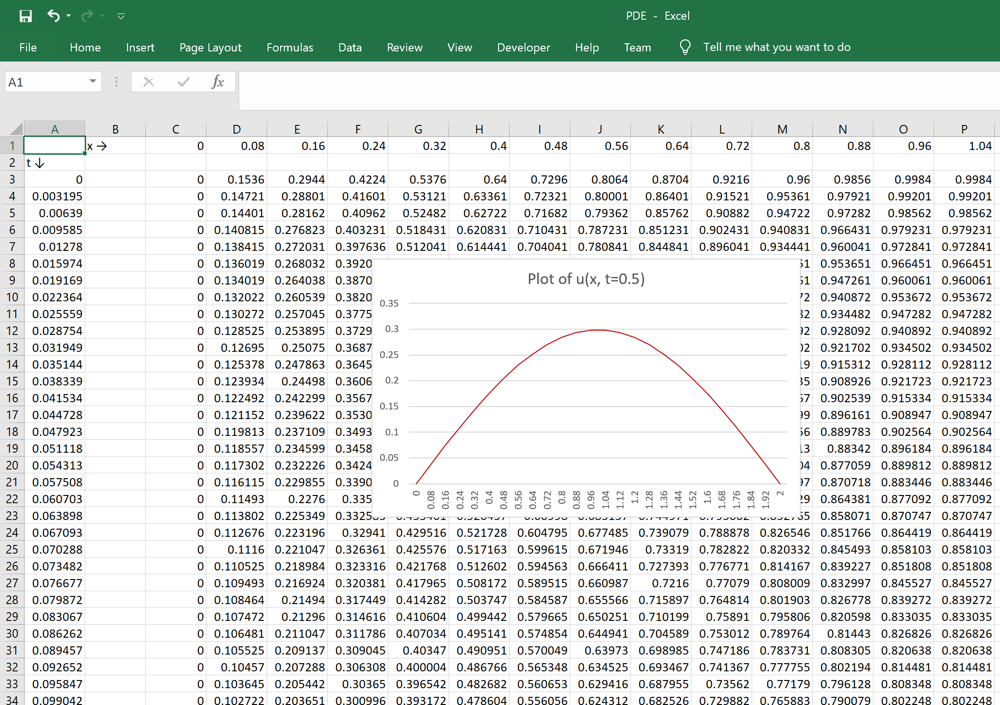
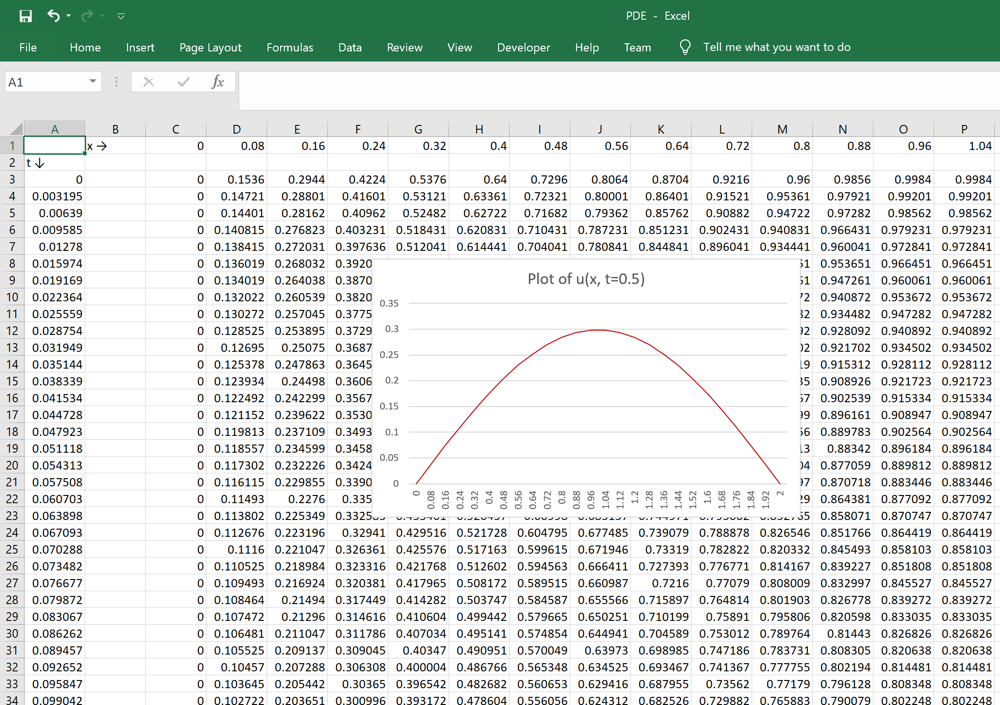
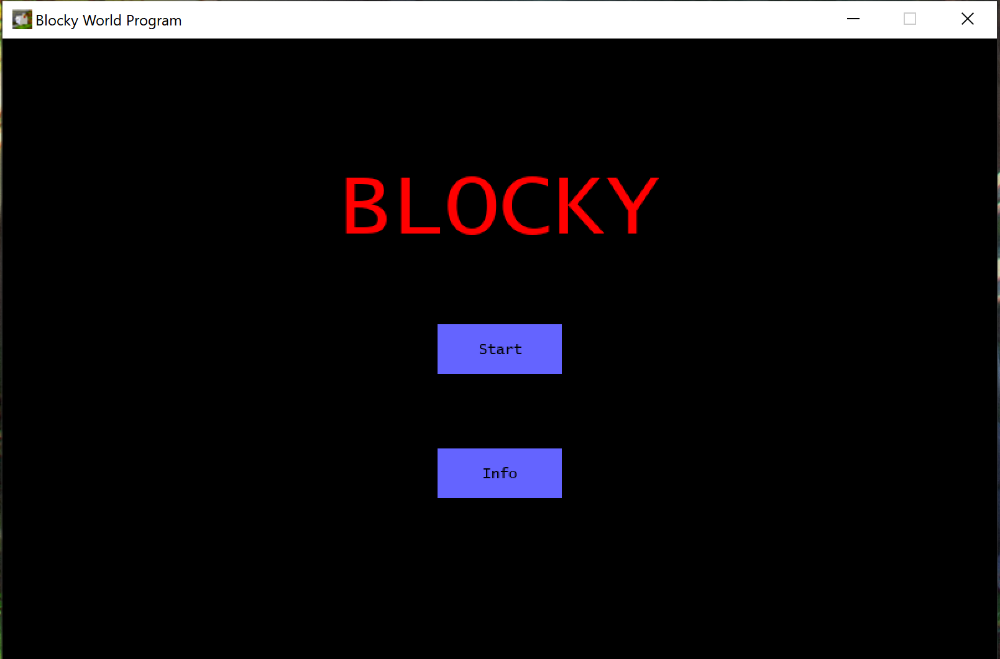
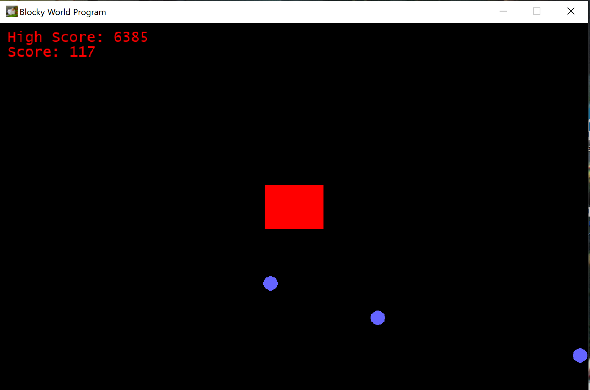

Numerical Differential Equation Solver
 

This program uses finite difference methods to solve differential equations. The solution values are organized in a matrix and written to an excel file. We visually represent the solution on a plot generated with Matplotlib.
Blocky Bullet Dodge!
 
A simple user-interactive game developed on Pygame. You control a movable block and the goal is to dodge the bullet obstacles. Stay alive for as long as you can!
Rubik's Cube Simulator

An interactable virtual Rubik's Cube. All standard cube operations are implemented into the program. The controls are detailed in the project's README.md.